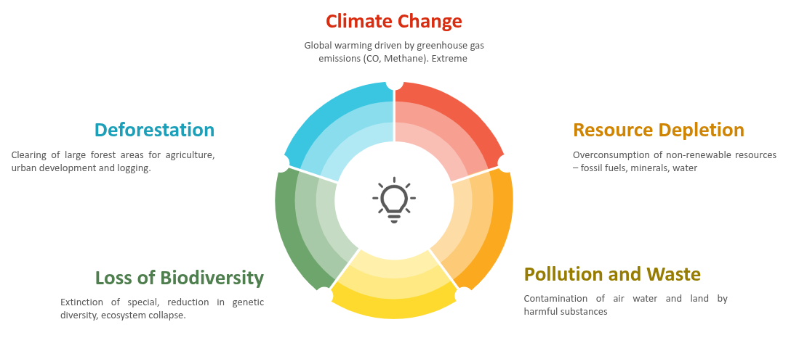
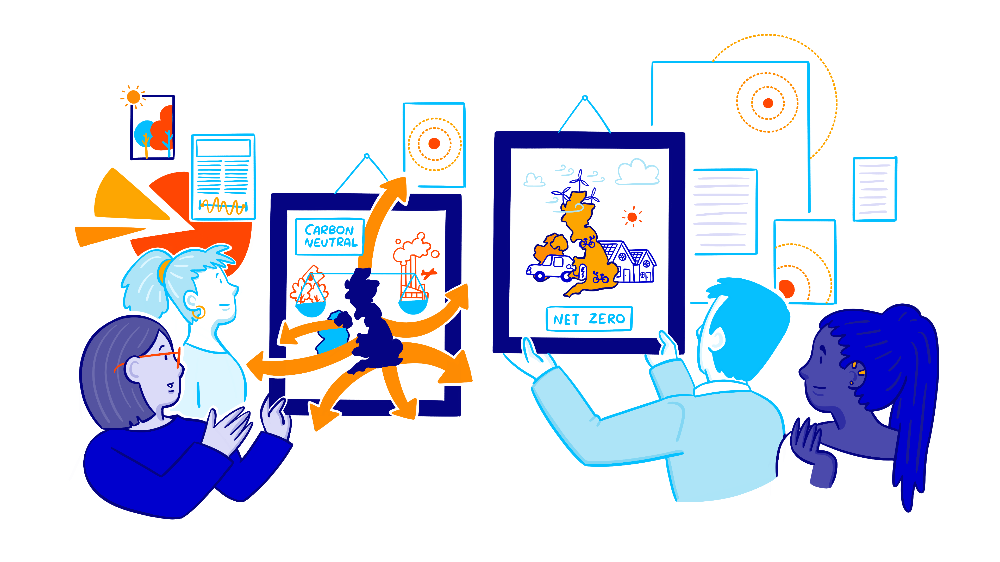
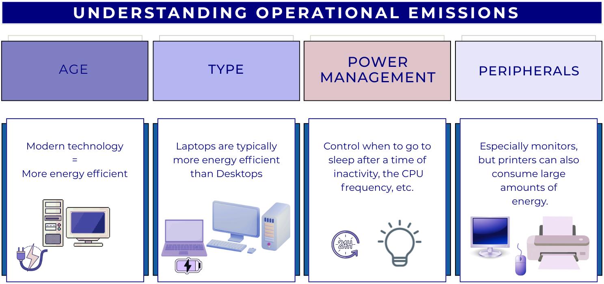
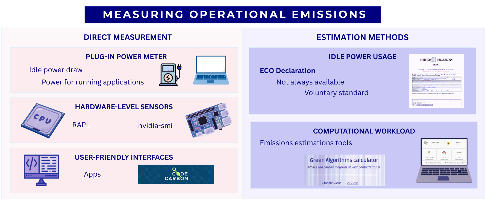
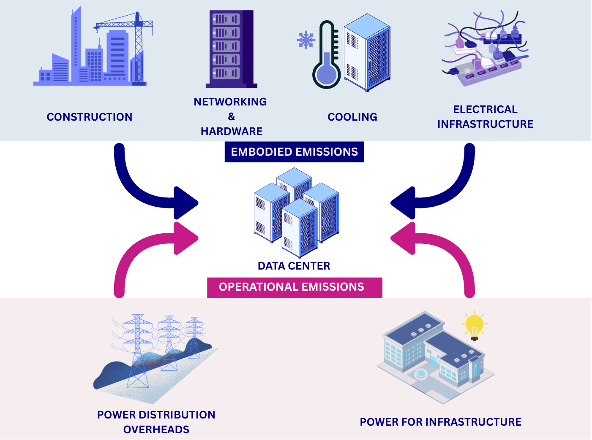
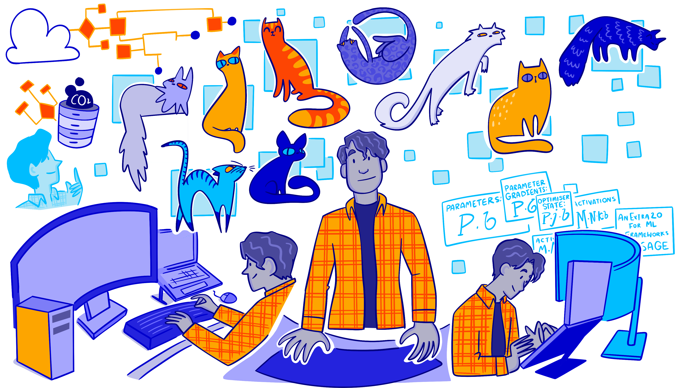
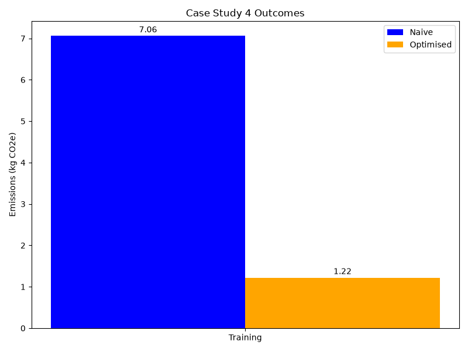

All Images
Why sustainable digital research matters
Figure 1

Challenges of environmental sustainability
Figure 2

Carbon Neutral vs Net Zero
Figure 3
Mindful computing and what it means for
different people
Energy, power and carbon
Figure 1

Electricity demand, energy mix and carbon
intensity of the UK power grid as on 12/01/2026
Figure 2

Energy generation mix pie chart on a sunny day
in London obtained from https://carbonintensity.org.uk/
Figure 3

Carbon intensity of the UK power grid during
2025
Figure 4

The different scopes of GHG emissions CC BY 4.0
https://commons.wikimedia.org/w/index.php?curid=140748311
Digital research activities with sustainability issues
Figure 1
What is the relationship between research
activities and carbon emissions?
Figure 2

Computers have become an indispensable component
of modern life as well as digital research. These include everyday
devices such as laptops, desktops or phones, as well as servers that are
accessed remotely.
Figure 3
The full lifecycle of a laptop from
manufacturing to reuse.
Figure 4

Factors that affect the operational emissions
associated with a device.
Figure 5

Product Carbon Footprint for HP EliteBook 840
G9
Figure 6

Ways to measure the operational carbon emissions
associated with a device, including direct measurement and estimation
methods.
Figure 7

Screenshot of the Green Algorithms
Calculator
Figure 8

Data Centers Carbon Emissions Sources
Figure 9

Demonstration of how PUE relates to the division
of power within an data center. CC BY 4.0 https://learn.greensoftware.foundation
Introduction to the Case Studies
Case Study 1 - Research Software Engineer
Figure 1
Celia is a Research Software Engineer that works
as part of a research group. Two years ago, she developed and released a
Python package (hosted on PyPI) with a novel data analysis technique
relevant to her research area. The package has been a big success and
has been widely adopted. However, she has heard from some users that
they are using it on increasingly large datasets that leads to demanding
memory requirements and slow performance.
Figure 2

Carbon emissions for different research actions
comparing pre- and post-intervention
Case Study 2 - Lab Scientist doing computational work
Figure 1

Emma is a researcher in a biology lab and was
tasked with analysing genomic sequencing data. While she is an expert in
molecular biology, her computational and statistics background is
limited. Due to the type and volume of data generated in the lab, she
chose to write custom Python scripts to analyse her data. The project
Emma is working on is scheduled to run for 5 years.
Figure 2

Carbon emissions for different research actions
comparing pre- and post-intervention
Case Study 3 - HPC User
Figure 1
Hugh is a computational chemist in a research
group whose work involves high fidelity simulations of the dynamic
behaviour of atomistic systems. His work requires computational
resources far beyond that of a single machine so he makes use of a
number of High Performance Computing facilities.
Figure 2

Carbon emissions from each cluter comparing pre-
and post-intervention
Case Study 4 - GPU Computing User
Figure 1

Miguel is an MLOps engineer embedded
in an applied computational neuroscience department, whose applications
make heavy use of heterogeneous compute hardware such as GPUs and
neuromorphic processors. While the use of this hardware is crucial for
demanding SIMD
tasks, he is mindful that his domain of work is often disproportionately
carbon-intensive. The sheer size of the models, and the vast amounts of
data used to train them, mean that any procedure he performs must be
carefully planned in advance, as mistakes are costly.
Figure 2

Carbon emissions for model training comparing
the naive approach and Miguel’s optimised approach